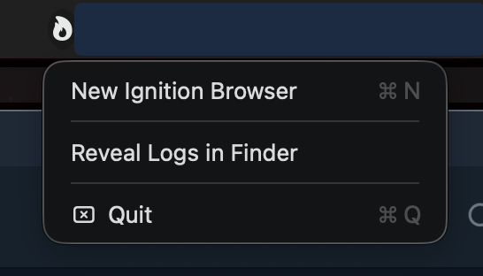

Disposable, isolated browser for macOS on Apple Silicon. Every link opens in a throwaway Firefox microVM — fresh each time, nothing persists.
Download
Host keys use ⌃⌥ (Ctrl+Alt); standard Firefox shortcuts (address bar, reload, find, zoom…) all go to Firefox.
Firefox is a Mozilla Foundation trademark; not affiliated with Mozilla or Apple. Ignition Browser © 2026 Vadim Likholetov · source.